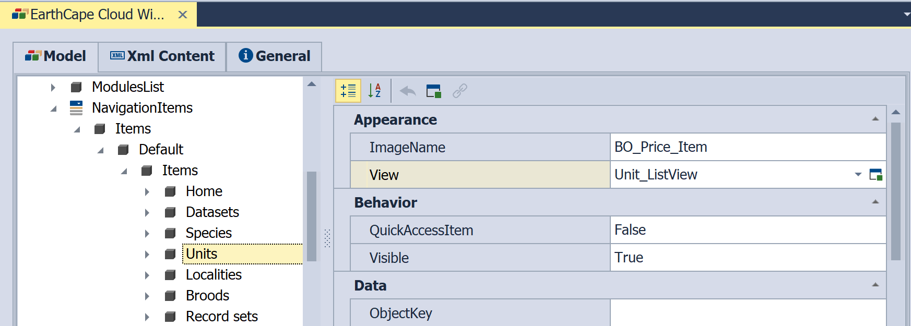
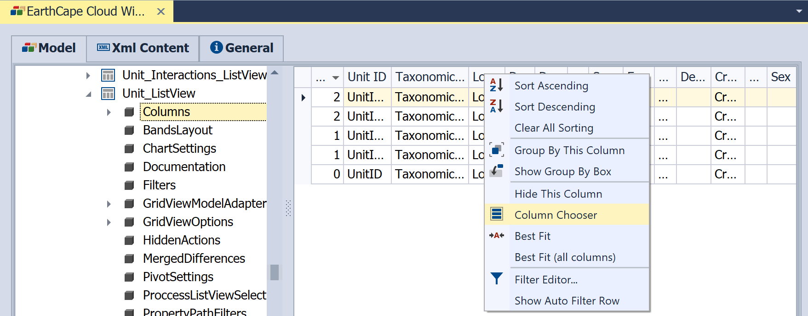
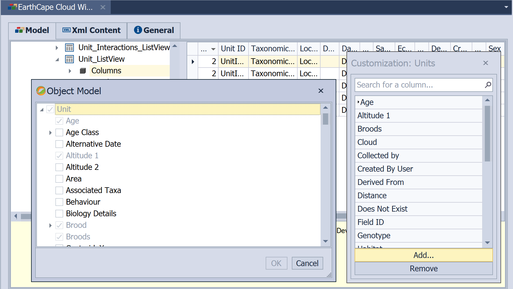

Change Field Layout and Visibility in a List View
This lesson will guide you through the steps needed to select columns displayed in the List View. For this purpose, the Units List View will be used. At runtime, you can right-click a column header and activate the Column Chooser, then drag invisible columns from the Column Chooser window to the grid control.
In a EarthCape Windows and Web Client applications, the customizations made using the Runtime Column Chooser are saved in the user record of Application Model. The set of columns visible by default for all users of the respective application edit the corresponding record of Application Model.
- Open Model Editor by double clicking the desired record
- Navigate to NavigationItems node and locate Units node

- Click on a pictopgram on the right of the "Unit_ListView" -> Model Editor will jump to the target list view.
- Select Columns node to invoke column designer

It will display the default structure of the List View. You can customize the default appearance of the List View by dragging, resizing and grouping the columns. Invoke the Customization window by right-clicking the table header and selecting Column Chooser.
- Save Application model record
- Restart windows client application or re-login to web application for your changes to be visible
Note that columns visible in Customization window are available to end user to customize column configuration at run time. "Add" button shows All columns that are available for Unit object and you can add/remove them from customization window.
